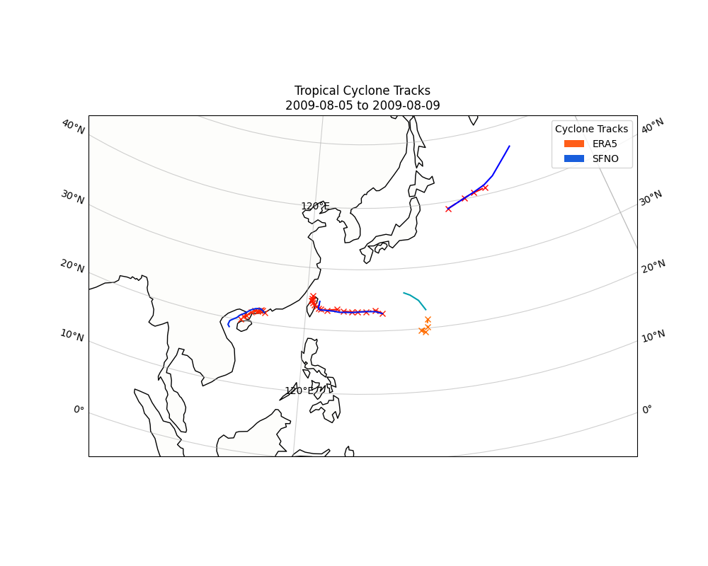

Note
Go to the end to download the full example code.
Tropical Cyclone Tracking#
Tropical cyclone tracking with tracker diagnostic models.
This example will demonstrate how to use the tropical cyclone (TC) tracker diagnostic models for creating TC paths. The diagnostics used here can be combined with other AI weather models and ensemble methods to create complex inference workflow that enable downstream analysis.
In this example you will learn:
How to instantiate a TC tracker diagnostic
How to apply the TC tracker to data
How to couple the TC tracker to a prognostic model
Post-processing results
# /// script
# dependencies = [
# "torch==2.9.1", # Match lock file to avoid torch-harmonics issue
# "earth2studio[cyclone,sfno] @ git+https://github.com/NVIDIA/earth2studio.git",
# "cartopy",
# ]
# ///
Set Up#
This example will look at tracking cyclones during August 2009, a moment in time when
multiple tropical cyclones where impacting East Asia.
Earth2Studio provides multiple variations of TC trackers such as earth2studio.models.dx.TCTrackerVitart
and earth2studio.models.dx.TCTrackerWuDuan.
The difference being the underlying algorithm used to identify the center.
This example needs the following:
Diagostic Model: Use the TC tracker
earth2studio.models.dx.TCTrackerWuDuan.Datasource: Pull data from the WB2 ERA5 data api
earth2studio.data.WB2ERA5.Prognostic Model: Use the built in FourCastNet Model
earth2studio.models.px.FCN.
import os
os.makedirs("outputs", exist_ok=True)
from dotenv import load_dotenv
load_dotenv() # TODO: make common example prep function
from datetime import datetime, timedelta
import torch
from earth2studio.data import ARCO
from earth2studio.models.dx import TCTrackerWuDuan
from earth2studio.models.px import SFNO
from earth2studio.utils.time import to_time_array
# Create tropical cyclone tracker
tracker = TCTrackerWuDuan()
# Load the default model package which downloads the check point from NGC
package = SFNO.load_default_package()
prognostic = SFNO.load_model(package)
# Create the data source
data = ARCO()
nsteps = 16 # Number of steps to run the tracker for into future
start_time = datetime(2009, 8, 5) # Start date for inference
Tracking Analysis Data#
Before coupling the TC tracker with a prognostic model, we will first apply it to analysis data. We can fetch a small time range from the data source and provide it to our model.
For the forecast we will predict for two days (these will get executed as a batch) for 20 forecast steps which is 5 days.
from earth2studio.data import fetch_data, prep_data_array
device = torch.device("cuda:0" if torch.cuda.is_available() else "cpu")
tracker = tracker.to(device)
# Land fall occured August 25th 2017
times = [start_time + timedelta(hours=6 * i) for i in range(nsteps + 1)]
for step, time in enumerate(times):
da = data(time, tracker.input_coords()["variable"])
x, coords = prep_data_array(da, device=device)
output, output_coords = tracker(x, coords)
print(f"Step {step}: ARCO tracks output shape {output.shape}")
era5_tracks = output.cpu()
torch.save(era5_tracks, "outputs/13_era5_paths.pt")
2026-03-23 20:34:28.726 | DEBUG | earth2studio.data.arco:_async_init:131 - Using Multi-Storage Client for ARCO data access
Fetching ARCO data: 0%| | 0/5 [00:00<?, ?it/s]
2026-03-23 20:34:29.863 | DEBUG | earth2studio.data.arco:fetch_array:301 - Fetching ARCO zarr array for variable: v850 at 2009-08-05T00:00:00
Fetching ARCO data: 0%| | 0/5 [00:00<?, ?it/s]
2026-03-23 20:34:29.864 | DEBUG | earth2studio.data.arco:fetch_array:301 - Fetching ARCO zarr array for variable: v10m at 2009-08-05T00:00:00
Fetching ARCO data: 0%| | 0/5 [00:00<?, ?it/s]
2026-03-23 20:34:29.864 | DEBUG | earth2studio.data.arco:fetch_array:301 - Fetching ARCO zarr array for variable: u10m at 2009-08-05T00:00:00
Fetching ARCO data: 0%| | 0/5 [00:00<?, ?it/s]
2026-03-23 20:34:29.865 | DEBUG | earth2studio.data.arco:fetch_array:301 - Fetching ARCO zarr array for variable: msl at 2009-08-05T00:00:00
Fetching ARCO data: 0%| | 0/5 [00:00<?, ?it/s]
2026-03-23 20:34:29.865 | DEBUG | earth2studio.data.arco:fetch_array:301 - Fetching ARCO zarr array for variable: u850 at 2009-08-05T00:00:00
Fetching ARCO data: 0%| | 0/5 [00:00<?, ?it/s]
Fetching ARCO data: 20%|██ | 1/5 [00:00<00:00, 6.08it/s]
Fetching ARCO data: 80%|████████ | 4/5 [00:00<00:00, 14.53it/s]
Fetching ARCO data: 100%|██████████| 5/5 [00:00<00:00, 16.38it/s]
Step 0: ARCO tracks output shape torch.Size([1, 7, 1, 4])
Fetching ARCO data: 0%| | 0/5 [00:00<?, ?it/s]
2026-03-23 20:34:30.612 | DEBUG | earth2studio.data.arco:fetch_array:301 - Fetching ARCO zarr array for variable: msl at 2009-08-05T06:00:00
Fetching ARCO data: 0%| | 0/5 [00:00<?, ?it/s]
2026-03-23 20:34:30.612 | DEBUG | earth2studio.data.arco:fetch_array:301 - Fetching ARCO zarr array for variable: v850 at 2009-08-05T06:00:00
Fetching ARCO data: 0%| | 0/5 [00:00<?, ?it/s]
2026-03-23 20:34:30.613 | DEBUG | earth2studio.data.arco:fetch_array:301 - Fetching ARCO zarr array for variable: v10m at 2009-08-05T06:00:00
Fetching ARCO data: 0%| | 0/5 [00:00<?, ?it/s]
2026-03-23 20:34:30.613 | DEBUG | earth2studio.data.arco:fetch_array:301 - Fetching ARCO zarr array for variable: u850 at 2009-08-05T06:00:00
Fetching ARCO data: 0%| | 0/5 [00:00<?, ?it/s]
2026-03-23 20:34:30.613 | DEBUG | earth2studio.data.arco:fetch_array:301 - Fetching ARCO zarr array for variable: u10m at 2009-08-05T06:00:00
Fetching ARCO data: 0%| | 0/5 [00:00<?, ?it/s]
Fetching ARCO data: 20%|██ | 1/5 [00:00<00:00, 6.48it/s]
Fetching ARCO data: 80%|████████ | 4/5 [00:00<00:00, 15.15it/s]
Fetching ARCO data: 100%|██████████| 5/5 [00:00<00:00, 17.14it/s]
Step 1: ARCO tracks output shape torch.Size([1, 7, 2, 4])
Fetching ARCO data: 0%| | 0/5 [00:00<?, ?it/s]
2026-03-23 20:34:31.140 | DEBUG | earth2studio.data.arco:fetch_array:301 - Fetching ARCO zarr array for variable: u10m at 2009-08-05T12:00:00
Fetching ARCO data: 0%| | 0/5 [00:00<?, ?it/s]
2026-03-23 20:34:31.140 | DEBUG | earth2studio.data.arco:fetch_array:301 - Fetching ARCO zarr array for variable: v850 at 2009-08-05T12:00:00
Fetching ARCO data: 0%| | 0/5 [00:00<?, ?it/s]
2026-03-23 20:34:31.141 | DEBUG | earth2studio.data.arco:fetch_array:301 - Fetching ARCO zarr array for variable: v10m at 2009-08-05T12:00:00
Fetching ARCO data: 0%| | 0/5 [00:00<?, ?it/s]
2026-03-23 20:34:31.141 | DEBUG | earth2studio.data.arco:fetch_array:301 - Fetching ARCO zarr array for variable: u850 at 2009-08-05T12:00:00
Fetching ARCO data: 0%| | 0/5 [00:00<?, ?it/s]
2026-03-23 20:34:31.141 | DEBUG | earth2studio.data.arco:fetch_array:301 - Fetching ARCO zarr array for variable: msl at 2009-08-05T12:00:00
Fetching ARCO data: 0%| | 0/5 [00:00<?, ?it/s]
Fetching ARCO data: 20%|██ | 1/5 [00:00<00:00, 6.91it/s]
Fetching ARCO data: 80%|████████ | 4/5 [00:00<00:00, 15.45it/s]
Fetching ARCO data: 100%|██████████| 5/5 [00:00<00:00, 17.58it/s]
Step 2: ARCO tracks output shape torch.Size([1, 7, 3, 4])
Fetching ARCO data: 0%| | 0/5 [00:00<?, ?it/s]
2026-03-23 20:34:31.669 | DEBUG | earth2studio.data.arco:fetch_array:301 - Fetching ARCO zarr array for variable: msl at 2009-08-05T18:00:00
Fetching ARCO data: 0%| | 0/5 [00:00<?, ?it/s]
2026-03-23 20:34:31.669 | DEBUG | earth2studio.data.arco:fetch_array:301 - Fetching ARCO zarr array for variable: v850 at 2009-08-05T18:00:00
Fetching ARCO data: 0%| | 0/5 [00:00<?, ?it/s]
2026-03-23 20:34:31.670 | DEBUG | earth2studio.data.arco:fetch_array:301 - Fetching ARCO zarr array for variable: v10m at 2009-08-05T18:00:00
Fetching ARCO data: 0%| | 0/5 [00:00<?, ?it/s]
2026-03-23 20:34:31.670 | DEBUG | earth2studio.data.arco:fetch_array:301 - Fetching ARCO zarr array for variable: u850 at 2009-08-05T18:00:00
Fetching ARCO data: 0%| | 0/5 [00:00<?, ?it/s]
2026-03-23 20:34:31.670 | DEBUG | earth2studio.data.arco:fetch_array:301 - Fetching ARCO zarr array for variable: u10m at 2009-08-05T18:00:00
Fetching ARCO data: 0%| | 0/5 [00:00<?, ?it/s]
Fetching ARCO data: 20%|██ | 1/5 [00:00<00:00, 6.60it/s]
Fetching ARCO data: 80%|████████ | 4/5 [00:00<00:00, 15.18it/s]
Fetching ARCO data: 100%|██████████| 5/5 [00:00<00:00, 17.22it/s]
Step 3: ARCO tracks output shape torch.Size([1, 8, 4, 4])
Fetching ARCO data: 0%| | 0/5 [00:00<?, ?it/s]
2026-03-23 20:34:32.190 | DEBUG | earth2studio.data.arco:fetch_array:301 - Fetching ARCO zarr array for variable: u10m at 2009-08-06T00:00:00
Fetching ARCO data: 0%| | 0/5 [00:00<?, ?it/s]
2026-03-23 20:34:32.191 | DEBUG | earth2studio.data.arco:fetch_array:301 - Fetching ARCO zarr array for variable: v850 at 2009-08-06T00:00:00
Fetching ARCO data: 0%| | 0/5 [00:00<?, ?it/s]
2026-03-23 20:34:32.191 | DEBUG | earth2studio.data.arco:fetch_array:301 - Fetching ARCO zarr array for variable: v10m at 2009-08-06T00:00:00
Fetching ARCO data: 0%| | 0/5 [00:00<?, ?it/s]
2026-03-23 20:34:32.192 | DEBUG | earth2studio.data.arco:fetch_array:301 - Fetching ARCO zarr array for variable: u850 at 2009-08-06T00:00:00
Fetching ARCO data: 0%| | 0/5 [00:00<?, ?it/s]
2026-03-23 20:34:32.192 | DEBUG | earth2studio.data.arco:fetch_array:301 - Fetching ARCO zarr array for variable: msl at 2009-08-06T00:00:00
Fetching ARCO data: 0%| | 0/5 [00:00<?, ?it/s]
Fetching ARCO data: 20%|██ | 1/5 [00:00<00:00, 6.87it/s]
Fetching ARCO data: 80%|████████ | 4/5 [00:00<00:00, 15.62it/s]
Fetching ARCO data: 100%|██████████| 5/5 [00:00<00:00, 17.72it/s]
Step 4: ARCO tracks output shape torch.Size([1, 9, 5, 4])
Fetching ARCO data: 0%| | 0/5 [00:00<?, ?it/s]
2026-03-23 20:34:32.736 | DEBUG | earth2studio.data.arco:fetch_array:301 - Fetching ARCO zarr array for variable: msl at 2009-08-06T06:00:00
Fetching ARCO data: 0%| | 0/5 [00:00<?, ?it/s]
2026-03-23 20:34:32.736 | DEBUG | earth2studio.data.arco:fetch_array:301 - Fetching ARCO zarr array for variable: v850 at 2009-08-06T06:00:00
Fetching ARCO data: 0%| | 0/5 [00:00<?, ?it/s]
2026-03-23 20:34:32.737 | DEBUG | earth2studio.data.arco:fetch_array:301 - Fetching ARCO zarr array for variable: v10m at 2009-08-06T06:00:00
Fetching ARCO data: 0%| | 0/5 [00:00<?, ?it/s]
2026-03-23 20:34:32.737 | DEBUG | earth2studio.data.arco:fetch_array:301 - Fetching ARCO zarr array for variable: u850 at 2009-08-06T06:00:00
Fetching ARCO data: 0%| | 0/5 [00:00<?, ?it/s]
2026-03-23 20:34:32.737 | DEBUG | earth2studio.data.arco:fetch_array:301 - Fetching ARCO zarr array for variable: u10m at 2009-08-06T06:00:00
Fetching ARCO data: 0%| | 0/5 [00:00<?, ?it/s]
Fetching ARCO data: 20%|██ | 1/5 [00:00<00:00, 7.00it/s]
Fetching ARCO data: 80%|████████ | 4/5 [00:00<00:00, 17.47it/s]
Fetching ARCO data: 100%|██████████| 5/5 [00:00<00:00, 17.87it/s]
Step 5: ARCO tracks output shape torch.Size([1, 10, 6, 4])
Fetching ARCO data: 0%| | 0/5 [00:00<?, ?it/s]
2026-03-23 20:34:33.315 | DEBUG | earth2studio.data.arco:fetch_array:301 - Fetching ARCO zarr array for variable: u10m at 2009-08-06T12:00:00
Fetching ARCO data: 0%| | 0/5 [00:00<?, ?it/s]
2026-03-23 20:34:33.316 | DEBUG | earth2studio.data.arco:fetch_array:301 - Fetching ARCO zarr array for variable: v850 at 2009-08-06T12:00:00
Fetching ARCO data: 0%| | 0/5 [00:00<?, ?it/s]
2026-03-23 20:34:33.316 | DEBUG | earth2studio.data.arco:fetch_array:301 - Fetching ARCO zarr array for variable: v10m at 2009-08-06T12:00:00
Fetching ARCO data: 0%| | 0/5 [00:00<?, ?it/s]
2026-03-23 20:34:33.316 | DEBUG | earth2studio.data.arco:fetch_array:301 - Fetching ARCO zarr array for variable: u850 at 2009-08-06T12:00:00
Fetching ARCO data: 0%| | 0/5 [00:00<?, ?it/s]
2026-03-23 20:34:33.317 | DEBUG | earth2studio.data.arco:fetch_array:301 - Fetching ARCO zarr array for variable: msl at 2009-08-06T12:00:00
Fetching ARCO data: 0%| | 0/5 [00:00<?, ?it/s]
Fetching ARCO data: 20%|██ | 1/5 [00:00<00:00, 6.89it/s]
Fetching ARCO data: 80%|████████ | 4/5 [00:00<00:00, 15.45it/s]
Fetching ARCO data: 100%|██████████| 5/5 [00:00<00:00, 17.56it/s]
Step 6: ARCO tracks output shape torch.Size([1, 11, 7, 4])
Fetching ARCO data: 0%| | 0/5 [00:00<?, ?it/s]
2026-03-23 20:34:33.814 | DEBUG | earth2studio.data.arco:fetch_array:301 - Fetching ARCO zarr array for variable: msl at 2009-08-06T18:00:00
Fetching ARCO data: 0%| | 0/5 [00:00<?, ?it/s]
2026-03-23 20:34:33.815 | DEBUG | earth2studio.data.arco:fetch_array:301 - Fetching ARCO zarr array for variable: v850 at 2009-08-06T18:00:00
Fetching ARCO data: 0%| | 0/5 [00:00<?, ?it/s]
2026-03-23 20:34:33.815 | DEBUG | earth2studio.data.arco:fetch_array:301 - Fetching ARCO zarr array for variable: v10m at 2009-08-06T18:00:00
Fetching ARCO data: 0%| | 0/5 [00:00<?, ?it/s]
2026-03-23 20:34:33.815 | DEBUG | earth2studio.data.arco:fetch_array:301 - Fetching ARCO zarr array for variable: u850 at 2009-08-06T18:00:00
Fetching ARCO data: 0%| | 0/5 [00:00<?, ?it/s]
2026-03-23 20:34:33.816 | DEBUG | earth2studio.data.arco:fetch_array:301 - Fetching ARCO zarr array for variable: u10m at 2009-08-06T18:00:00
Fetching ARCO data: 0%| | 0/5 [00:00<?, ?it/s]
Fetching ARCO data: 20%|██ | 1/5 [00:00<00:00, 6.76it/s]
Fetching ARCO data: 80%|████████ | 4/5 [00:00<00:00, 16.68it/s]
Fetching ARCO data: 100%|██████████| 5/5 [00:00<00:00, 16.99it/s]
Step 7: ARCO tracks output shape torch.Size([1, 12, 8, 4])
Fetching ARCO data: 0%| | 0/5 [00:00<?, ?it/s]
2026-03-23 20:34:34.329 | DEBUG | earth2studio.data.arco:fetch_array:301 - Fetching ARCO zarr array for variable: u10m at 2009-08-07T00:00:00
Fetching ARCO data: 0%| | 0/5 [00:00<?, ?it/s]
2026-03-23 20:34:34.329 | DEBUG | earth2studio.data.arco:fetch_array:301 - Fetching ARCO zarr array for variable: v850 at 2009-08-07T00:00:00
Fetching ARCO data: 0%| | 0/5 [00:00<?, ?it/s]
2026-03-23 20:34:34.329 | DEBUG | earth2studio.data.arco:fetch_array:301 - Fetching ARCO zarr array for variable: v10m at 2009-08-07T00:00:00
Fetching ARCO data: 0%| | 0/5 [00:00<?, ?it/s]
2026-03-23 20:34:34.330 | DEBUG | earth2studio.data.arco:fetch_array:301 - Fetching ARCO zarr array for variable: u850 at 2009-08-07T00:00:00
Fetching ARCO data: 0%| | 0/5 [00:00<?, ?it/s]
2026-03-23 20:34:34.330 | DEBUG | earth2studio.data.arco:fetch_array:301 - Fetching ARCO zarr array for variable: msl at 2009-08-07T00:00:00
Fetching ARCO data: 0%| | 0/5 [00:00<?, ?it/s]
Fetching ARCO data: 20%|██ | 1/5 [00:00<00:00, 6.73it/s]
Fetching ARCO data: 80%|████████ | 4/5 [00:00<00:00, 16.71it/s]
Fetching ARCO data: 100%|██████████| 5/5 [00:00<00:00, 17.07it/s]
Step 8: ARCO tracks output shape torch.Size([1, 13, 9, 4])
Fetching ARCO data: 0%| | 0/5 [00:00<?, ?it/s]
2026-03-23 20:34:34.877 | DEBUG | earth2studio.data.arco:fetch_array:301 - Fetching ARCO zarr array for variable: msl at 2009-08-07T06:00:00
Fetching ARCO data: 0%| | 0/5 [00:00<?, ?it/s]
2026-03-23 20:34:34.878 | DEBUG | earth2studio.data.arco:fetch_array:301 - Fetching ARCO zarr array for variable: v850 at 2009-08-07T06:00:00
Fetching ARCO data: 0%| | 0/5 [00:00<?, ?it/s]
2026-03-23 20:34:34.878 | DEBUG | earth2studio.data.arco:fetch_array:301 - Fetching ARCO zarr array for variable: v10m at 2009-08-07T06:00:00
Fetching ARCO data: 0%| | 0/5 [00:00<?, ?it/s]
2026-03-23 20:34:34.878 | DEBUG | earth2studio.data.arco:fetch_array:301 - Fetching ARCO zarr array for variable: u850 at 2009-08-07T06:00:00
Fetching ARCO data: 0%| | 0/5 [00:00<?, ?it/s]
2026-03-23 20:34:34.878 | DEBUG | earth2studio.data.arco:fetch_array:301 - Fetching ARCO zarr array for variable: u10m at 2009-08-07T06:00:00
Fetching ARCO data: 0%| | 0/5 [00:00<?, ?it/s]
Fetching ARCO data: 20%|██ | 1/5 [00:00<00:00, 6.66it/s]
Fetching ARCO data: 80%|████████ | 4/5 [00:00<00:00, 16.77it/s]
Fetching ARCO data: 100%|██████████| 5/5 [00:00<00:00, 17.07it/s]
Step 9: ARCO tracks output shape torch.Size([1, 14, 10, 4])
Fetching ARCO data: 0%| | 0/5 [00:00<?, ?it/s]
2026-03-23 20:34:35.410 | DEBUG | earth2studio.data.arco:fetch_array:301 - Fetching ARCO zarr array for variable: u10m at 2009-08-07T12:00:00
Fetching ARCO data: 0%| | 0/5 [00:00<?, ?it/s]
2026-03-23 20:34:35.411 | DEBUG | earth2studio.data.arco:fetch_array:301 - Fetching ARCO zarr array for variable: v850 at 2009-08-07T12:00:00
Fetching ARCO data: 0%| | 0/5 [00:00<?, ?it/s]
2026-03-23 20:34:35.411 | DEBUG | earth2studio.data.arco:fetch_array:301 - Fetching ARCO zarr array for variable: v10m at 2009-08-07T12:00:00
Fetching ARCO data: 0%| | 0/5 [00:00<?, ?it/s]
2026-03-23 20:34:35.411 | DEBUG | earth2studio.data.arco:fetch_array:301 - Fetching ARCO zarr array for variable: u850 at 2009-08-07T12:00:00
Fetching ARCO data: 0%| | 0/5 [00:00<?, ?it/s]
2026-03-23 20:34:35.412 | DEBUG | earth2studio.data.arco:fetch_array:301 - Fetching ARCO zarr array for variable: msl at 2009-08-07T12:00:00
Fetching ARCO data: 0%| | 0/5 [00:00<?, ?it/s]
Fetching ARCO data: 20%|██ | 1/5 [00:00<00:00, 6.75it/s]
Fetching ARCO data: 80%|████████ | 4/5 [00:00<00:00, 16.67it/s]
Fetching ARCO data: 100%|██████████| 5/5 [00:00<00:00, 17.03it/s]
Step 10: ARCO tracks output shape torch.Size([1, 15, 11, 4])
Fetching ARCO data: 0%| | 0/5 [00:00<?, ?it/s]
2026-03-23 20:34:35.922 | DEBUG | earth2studio.data.arco:fetch_array:301 - Fetching ARCO zarr array for variable: msl at 2009-08-07T18:00:00
Fetching ARCO data: 0%| | 0/5 [00:00<?, ?it/s]
2026-03-23 20:34:35.922 | DEBUG | earth2studio.data.arco:fetch_array:301 - Fetching ARCO zarr array for variable: v850 at 2009-08-07T18:00:00
Fetching ARCO data: 0%| | 0/5 [00:00<?, ?it/s]
2026-03-23 20:34:35.922 | DEBUG | earth2studio.data.arco:fetch_array:301 - Fetching ARCO zarr array for variable: v10m at 2009-08-07T18:00:00
Fetching ARCO data: 0%| | 0/5 [00:00<?, ?it/s]
2026-03-23 20:34:35.923 | DEBUG | earth2studio.data.arco:fetch_array:301 - Fetching ARCO zarr array for variable: u850 at 2009-08-07T18:00:00
Fetching ARCO data: 0%| | 0/5 [00:00<?, ?it/s]
2026-03-23 20:34:35.923 | DEBUG | earth2studio.data.arco:fetch_array:301 - Fetching ARCO zarr array for variable: u10m at 2009-08-07T18:00:00
Fetching ARCO data: 0%| | 0/5 [00:00<?, ?it/s]
Fetching ARCO data: 20%|██ | 1/5 [00:00<00:00, 7.04it/s]
Fetching ARCO data: 80%|████████ | 4/5 [00:00<00:00, 17.57it/s]
Fetching ARCO data: 100%|██████████| 5/5 [00:00<00:00, 17.77it/s]
Step 11: ARCO tracks output shape torch.Size([1, 16, 12, 4])
Fetching ARCO data: 0%| | 0/5 [00:00<?, ?it/s]
2026-03-23 20:34:36.420 | DEBUG | earth2studio.data.arco:fetch_array:301 - Fetching ARCO zarr array for variable: u10m at 2009-08-08T00:00:00
Fetching ARCO data: 0%| | 0/5 [00:00<?, ?it/s]
2026-03-23 20:34:36.421 | DEBUG | earth2studio.data.arco:fetch_array:301 - Fetching ARCO zarr array for variable: v850 at 2009-08-08T00:00:00
Fetching ARCO data: 0%| | 0/5 [00:00<?, ?it/s]
2026-03-23 20:34:36.421 | DEBUG | earth2studio.data.arco:fetch_array:301 - Fetching ARCO zarr array for variable: v10m at 2009-08-08T00:00:00
Fetching ARCO data: 0%| | 0/5 [00:00<?, ?it/s]
2026-03-23 20:34:36.421 | DEBUG | earth2studio.data.arco:fetch_array:301 - Fetching ARCO zarr array for variable: u850 at 2009-08-08T00:00:00
Fetching ARCO data: 0%| | 0/5 [00:00<?, ?it/s]
2026-03-23 20:34:36.422 | DEBUG | earth2studio.data.arco:fetch_array:301 - Fetching ARCO zarr array for variable: msl at 2009-08-08T00:00:00
Fetching ARCO data: 0%| | 0/5 [00:00<?, ?it/s]
Fetching ARCO data: 20%|██ | 1/5 [00:00<00:00, 6.85it/s]
Fetching ARCO data: 80%|████████ | 4/5 [00:00<00:00, 17.17it/s]
Fetching ARCO data: 100%|██████████| 5/5 [00:00<00:00, 17.18it/s]
Step 12: ARCO tracks output shape torch.Size([1, 17, 13, 4])
Fetching ARCO data: 0%| | 0/5 [00:00<?, ?it/s]
2026-03-23 20:34:36.928 | DEBUG | earth2studio.data.arco:fetch_array:301 - Fetching ARCO zarr array for variable: msl at 2009-08-08T06:00:00
Fetching ARCO data: 0%| | 0/5 [00:00<?, ?it/s]
2026-03-23 20:34:36.928 | DEBUG | earth2studio.data.arco:fetch_array:301 - Fetching ARCO zarr array for variable: v850 at 2009-08-08T06:00:00
Fetching ARCO data: 0%| | 0/5 [00:00<?, ?it/s]
2026-03-23 20:34:36.929 | DEBUG | earth2studio.data.arco:fetch_array:301 - Fetching ARCO zarr array for variable: v10m at 2009-08-08T06:00:00
Fetching ARCO data: 0%| | 0/5 [00:00<?, ?it/s]
2026-03-23 20:34:36.929 | DEBUG | earth2studio.data.arco:fetch_array:301 - Fetching ARCO zarr array for variable: u850 at 2009-08-08T06:00:00
Fetching ARCO data: 0%| | 0/5 [00:00<?, ?it/s]
2026-03-23 20:34:36.929 | DEBUG | earth2studio.data.arco:fetch_array:301 - Fetching ARCO zarr array for variable: u10m at 2009-08-08T06:00:00
Fetching ARCO data: 0%| | 0/5 [00:00<?, ?it/s]
Fetching ARCO data: 20%|██ | 1/5 [00:00<00:00, 7.01it/s]
Fetching ARCO data: 80%|████████ | 4/5 [00:00<00:00, 17.46it/s]
Fetching ARCO data: 100%|██████████| 5/5 [00:00<00:00, 17.88it/s]
Step 13: ARCO tracks output shape torch.Size([1, 18, 14, 4])
Fetching ARCO data: 0%| | 0/5 [00:00<?, ?it/s]
2026-03-23 20:34:37.430 | DEBUG | earth2studio.data.arco:fetch_array:301 - Fetching ARCO zarr array for variable: u10m at 2009-08-08T12:00:00
Fetching ARCO data: 0%| | 0/5 [00:00<?, ?it/s]
2026-03-23 20:34:37.431 | DEBUG | earth2studio.data.arco:fetch_array:301 - Fetching ARCO zarr array for variable: v850 at 2009-08-08T12:00:00
Fetching ARCO data: 0%| | 0/5 [00:00<?, ?it/s]
2026-03-23 20:34:37.431 | DEBUG | earth2studio.data.arco:fetch_array:301 - Fetching ARCO zarr array for variable: v10m at 2009-08-08T12:00:00
Fetching ARCO data: 0%| | 0/5 [00:00<?, ?it/s]
2026-03-23 20:34:37.431 | DEBUG | earth2studio.data.arco:fetch_array:301 - Fetching ARCO zarr array for variable: u850 at 2009-08-08T12:00:00
Fetching ARCO data: 0%| | 0/5 [00:00<?, ?it/s]
2026-03-23 20:34:37.432 | DEBUG | earth2studio.data.arco:fetch_array:301 - Fetching ARCO zarr array for variable: msl at 2009-08-08T12:00:00
Fetching ARCO data: 0%| | 0/5 [00:00<?, ?it/s]
Fetching ARCO data: 20%|██ | 1/5 [00:00<00:00, 6.92it/s]
Fetching ARCO data: 80%|████████ | 4/5 [00:00<00:00, 17.46it/s]
Fetching ARCO data: 100%|██████████| 5/5 [00:00<00:00, 17.84it/s]
Step 14: ARCO tracks output shape torch.Size([1, 19, 15, 4])
Fetching ARCO data: 0%| | 0/5 [00:00<?, ?it/s]
2026-03-23 20:34:37.921 | DEBUG | earth2studio.data.arco:fetch_array:301 - Fetching ARCO zarr array for variable: msl at 2009-08-08T18:00:00
Fetching ARCO data: 0%| | 0/5 [00:00<?, ?it/s]
2026-03-23 20:34:37.921 | DEBUG | earth2studio.data.arco:fetch_array:301 - Fetching ARCO zarr array for variable: v850 at 2009-08-08T18:00:00
Fetching ARCO data: 0%| | 0/5 [00:00<?, ?it/s]
2026-03-23 20:34:37.921 | DEBUG | earth2studio.data.arco:fetch_array:301 - Fetching ARCO zarr array for variable: v10m at 2009-08-08T18:00:00
Fetching ARCO data: 0%| | 0/5 [00:00<?, ?it/s]
2026-03-23 20:34:37.922 | DEBUG | earth2studio.data.arco:fetch_array:301 - Fetching ARCO zarr array for variable: u850 at 2009-08-08T18:00:00
Fetching ARCO data: 0%| | 0/5 [00:00<?, ?it/s]
2026-03-23 20:34:37.922 | DEBUG | earth2studio.data.arco:fetch_array:301 - Fetching ARCO zarr array for variable: u10m at 2009-08-08T18:00:00
Fetching ARCO data: 0%| | 0/5 [00:00<?, ?it/s]
Fetching ARCO data: 20%|██ | 1/5 [00:00<00:00, 6.86it/s]
Fetching ARCO data: 80%|████████ | 4/5 [00:00<00:00, 14.70it/s]
Fetching ARCO data: 100%|██████████| 5/5 [00:00<00:00, 16.84it/s]
Step 15: ARCO tracks output shape torch.Size([1, 20, 16, 4])
Fetching ARCO data: 0%| | 0/5 [00:00<?, ?it/s]
2026-03-23 20:34:38.446 | DEBUG | earth2studio.data.arco:fetch_array:301 - Fetching ARCO zarr array for variable: u10m at 2009-08-09T00:00:00
Fetching ARCO data: 0%| | 0/5 [00:00<?, ?it/s]
2026-03-23 20:34:38.446 | DEBUG | earth2studio.data.arco:fetch_array:301 - Fetching ARCO zarr array for variable: v850 at 2009-08-09T00:00:00
Fetching ARCO data: 0%| | 0/5 [00:00<?, ?it/s]
2026-03-23 20:34:38.447 | DEBUG | earth2studio.data.arco:fetch_array:301 - Fetching ARCO zarr array for variable: v10m at 2009-08-09T00:00:00
Fetching ARCO data: 0%| | 0/5 [00:00<?, ?it/s]
2026-03-23 20:34:38.447 | DEBUG | earth2studio.data.arco:fetch_array:301 - Fetching ARCO zarr array for variable: u850 at 2009-08-09T00:00:00
Fetching ARCO data: 0%| | 0/5 [00:00<?, ?it/s]
2026-03-23 20:34:38.447 | DEBUG | earth2studio.data.arco:fetch_array:301 - Fetching ARCO zarr array for variable: msl at 2009-08-09T00:00:00
Fetching ARCO data: 0%| | 0/5 [00:00<?, ?it/s]
Fetching ARCO data: 20%|██ | 1/5 [00:00<00:00, 6.86it/s]
Fetching ARCO data: 80%|████████ | 4/5 [00:00<00:00, 15.92it/s]
Fetching ARCO data: 100%|██████████| 5/5 [00:00<00:00, 18.00it/s]
Step 16: ARCO tracks output shape torch.Size([1, 21, 17, 4])
Notice that the output tensor grows as iterations are performed. This is because the tracker builds tracks based on previous forward passes returning a tensor with the dimensions [batch, path, step, variable]. Not all paths are guaranteed to be the same length or have the same start / stop time so any missing data is populated with a nan value.
Up next lets also repeat the same process using the prognostic AI model. One could use one of the build in workflows but here we will manually implement the inference loop.
from tqdm import tqdm
from earth2studio.utils.coords import map_coords
prognostic = prognostic.to(device)
# Reset the internal path buffer of tracker
tracker.reset_path_buffer()
# Load the initial state
x, coords = fetch_data(
source=data,
time=to_time_array([start_time]),
variable=prognostic.input_coords()["variable"],
lead_time=prognostic.input_coords()["lead_time"],
device=device,
)
# Create prognostic iterator
model = prognostic.create_iterator(x, coords)
with tqdm(total=nsteps + 1, desc="Running inference") as pbar:
for step, (x, coords) in enumerate(model):
# Run tracker
x, coords = map_coords(x, coords, tracker.input_coords())
output, output_coords = tracker(x, coords)
# lets remove the lead time dim
output = output[:, 0]
print(f"Step {step}: SFNO tracks output shape {output.shape}")
pbar.update(1)
if step == nsteps:
break
sfno_tracks = output.cpu()
torch.save(sfno_tracks, "outputs/13_sfno_paths.pt")
Fetching ARCO data: 0%| | 0/73 [00:00<?, ?it/s]
2026-03-23 20:34:39.411 | DEBUG | earth2studio.data.arco:fetch_array:301 - Fetching ARCO zarr array for variable: tcwv at 2009-08-05T00:00:00
Fetching ARCO data: 0%| | 0/73 [00:00<?, ?it/s]
2026-03-23 20:34:39.412 | DEBUG | earth2studio.data.arco:fetch_array:301 - Fetching ARCO zarr array for variable: u700 at 2009-08-05T00:00:00
Fetching ARCO data: 0%| | 0/73 [00:00<?, ?it/s]
2026-03-23 20:34:39.412 | DEBUG | earth2studio.data.arco:fetch_array:301 - Fetching ARCO zarr array for variable: z150 at 2009-08-05T00:00:00
Fetching ARCO data: 0%| | 0/73 [00:00<?, ?it/s]
2026-03-23 20:34:39.412 | DEBUG | earth2studio.data.arco:fetch_array:301 - Fetching ARCO zarr array for variable: v400 at 2009-08-05T00:00:00
Fetching ARCO data: 0%| | 0/73 [00:00<?, ?it/s]
2026-03-23 20:34:39.413 | DEBUG | earth2studio.data.arco:fetch_array:301 - Fetching ARCO zarr array for variable: z1000 at 2009-08-05T00:00:00
Fetching ARCO data: 0%| | 0/73 [00:00<?, ?it/s]
2026-03-23 20:34:39.413 | DEBUG | earth2studio.data.arco:fetch_array:301 - Fetching ARCO zarr array for variable: t700 at 2009-08-05T00:00:00
Fetching ARCO data: 0%| | 0/73 [00:00<?, ?it/s]
2026-03-23 20:34:39.413 | DEBUG | earth2studio.data.arco:fetch_array:301 - Fetching ARCO zarr array for variable: q400 at 2009-08-05T00:00:00
Fetching ARCO data: 0%| | 0/73 [00:00<?, ?it/s]
2026-03-23 20:34:39.414 | DEBUG | earth2studio.data.arco:fetch_array:301 - Fetching ARCO zarr array for variable: u50 at 2009-08-05T00:00:00
Fetching ARCO data: 0%| | 0/73 [00:00<?, ?it/s]
2026-03-23 20:34:39.414 | DEBUG | earth2studio.data.arco:fetch_array:301 - Fetching ARCO zarr array for variable: u850 at 2009-08-05T00:00:00
Fetching ARCO data: 0%| | 0/73 [00:00<?, ?it/s]
2026-03-23 20:34:39.414 | DEBUG | earth2studio.data.arco:fetch_array:301 - Fetching ARCO zarr array for variable: z200 at 2009-08-05T00:00:00
Fetching ARCO data: 0%| | 0/73 [00:00<?, ?it/s]
2026-03-23 20:34:39.414 | DEBUG | earth2studio.data.arco:fetch_array:301 - Fetching ARCO zarr array for variable: v500 at 2009-08-05T00:00:00
Fetching ARCO data: 0%| | 0/73 [00:00<?, ?it/s]
2026-03-23 20:34:39.415 | DEBUG | earth2studio.data.arco:fetch_array:301 - Fetching ARCO zarr array for variable: t50 at 2009-08-05T00:00:00
Fetching ARCO data: 0%| | 0/73 [00:00<?, ?it/s]
2026-03-23 20:34:39.415 | DEBUG | earth2studio.data.arco:fetch_array:301 - Fetching ARCO zarr array for variable: t850 at 2009-08-05T00:00:00
Fetching ARCO data: 0%| | 0/73 [00:00<?, ?it/s]
2026-03-23 20:34:39.415 | DEBUG | earth2studio.data.arco:fetch_array:301 - Fetching ARCO zarr array for variable: q500 at 2009-08-05T00:00:00
Fetching ARCO data: 0%| | 0/73 [00:00<?, ?it/s]
2026-03-23 20:34:39.415 | DEBUG | earth2studio.data.arco:fetch_array:301 - Fetching ARCO zarr array for variable: u100 at 2009-08-05T00:00:00
Fetching ARCO data: 0%| | 0/73 [00:00<?, ?it/s]
2026-03-23 20:34:39.416 | DEBUG | earth2studio.data.arco:fetch_array:301 - Fetching ARCO zarr array for variable: u925 at 2009-08-05T00:00:00
Fetching ARCO data: 0%| | 0/73 [00:00<?, ?it/s]
2026-03-23 20:34:39.416 | DEBUG | earth2studio.data.arco:fetch_array:301 - Fetching ARCO zarr array for variable: z250 at 2009-08-05T00:00:00
Fetching ARCO data: 0%| | 0/73 [00:00<?, ?it/s]
2026-03-23 20:34:39.416 | DEBUG | earth2studio.data.arco:fetch_array:301 - Fetching ARCO zarr array for variable: v600 at 2009-08-05T00:00:00
Fetching ARCO data: 0%| | 0/73 [00:00<?, ?it/s]
2026-03-23 20:34:39.417 | DEBUG | earth2studio.data.arco:fetch_array:301 - Fetching ARCO zarr array for variable: t100 at 2009-08-05T00:00:00
Fetching ARCO data: 0%| | 0/73 [00:00<?, ?it/s]
2026-03-23 20:34:39.417 | DEBUG | earth2studio.data.arco:fetch_array:301 - Fetching ARCO zarr array for variable: t925 at 2009-08-05T00:00:00
Fetching ARCO data: 0%| | 0/73 [00:00<?, ?it/s]
2026-03-23 20:34:39.417 | DEBUG | earth2studio.data.arco:fetch_array:301 - Fetching ARCO zarr array for variable: q600 at 2009-08-05T00:00:00
Fetching ARCO data: 0%| | 0/73 [00:00<?, ?it/s]
2026-03-23 20:34:39.417 | DEBUG | earth2studio.data.arco:fetch_array:301 - Fetching ARCO zarr array for variable: u10m at 2009-08-05T00:00:00
Fetching ARCO data: 0%| | 0/73 [00:00<?, ?it/s]
2026-03-23 20:34:39.418 | DEBUG | earth2studio.data.arco:fetch_array:301 - Fetching ARCO zarr array for variable: u150 at 2009-08-05T00:00:00
Fetching ARCO data: 0%| | 0/73 [00:00<?, ?it/s]
2026-03-23 20:34:39.418 | DEBUG | earth2studio.data.arco:fetch_array:301 - Fetching ARCO zarr array for variable: u1000 at 2009-08-05T00:00:00
Fetching ARCO data: 0%| | 0/73 [00:00<?, ?it/s]
2026-03-23 20:34:39.418 | DEBUG | earth2studio.data.arco:fetch_array:301 - Fetching ARCO zarr array for variable: z300 at 2009-08-05T00:00:00
Fetching ARCO data: 0%| | 0/73 [00:00<?, ?it/s]
2026-03-23 20:34:39.418 | DEBUG | earth2studio.data.arco:fetch_array:301 - Fetching ARCO zarr array for variable: v700 at 2009-08-05T00:00:00
Fetching ARCO data: 0%| | 0/73 [00:00<?, ?it/s]
2026-03-23 20:34:39.419 | DEBUG | earth2studio.data.arco:fetch_array:301 - Fetching ARCO zarr array for variable: t150 at 2009-08-05T00:00:00
Fetching ARCO data: 0%| | 0/73 [00:00<?, ?it/s]
2026-03-23 20:34:39.419 | DEBUG | earth2studio.data.arco:fetch_array:301 - Fetching ARCO zarr array for variable: t1000 at 2009-08-05T00:00:00
Fetching ARCO data: 0%| | 0/73 [00:00<?, ?it/s]
2026-03-23 20:34:39.419 | DEBUG | earth2studio.data.arco:fetch_array:301 - Fetching ARCO zarr array for variable: q700 at 2009-08-05T00:00:00
Fetching ARCO data: 0%| | 0/73 [00:00<?, ?it/s]
2026-03-23 20:34:39.420 | DEBUG | earth2studio.data.arco:fetch_array:301 - Fetching ARCO zarr array for variable: v10m at 2009-08-05T00:00:00
Fetching ARCO data: 0%| | 0/73 [00:00<?, ?it/s]
2026-03-23 20:34:39.420 | DEBUG | earth2studio.data.arco:fetch_array:301 - Fetching ARCO zarr array for variable: u200 at 2009-08-05T00:00:00
Fetching ARCO data: 0%| | 0/73 [00:00<?, ?it/s]
2026-03-23 20:34:39.420 | DEBUG | earth2studio.data.arco:fetch_array:301 - Fetching ARCO zarr array for variable: v50 at 2009-08-05T00:00:00
Fetching ARCO data: 0%| | 0/73 [00:00<?, ?it/s]
2026-03-23 20:34:39.420 | DEBUG | earth2studio.data.arco:fetch_array:301 - Fetching ARCO zarr array for variable: z400 at 2009-08-05T00:00:00
Fetching ARCO data: 0%| | 0/73 [00:00<?, ?it/s]
2026-03-23 20:34:39.421 | DEBUG | earth2studio.data.arco:fetch_array:301 - Fetching ARCO zarr array for variable: v850 at 2009-08-05T00:00:00
Fetching ARCO data: 0%| | 0/73 [00:00<?, ?it/s]
2026-03-23 20:34:39.421 | DEBUG | earth2studio.data.arco:fetch_array:301 - Fetching ARCO zarr array for variable: t200 at 2009-08-05T00:00:00
Fetching ARCO data: 0%| | 0/73 [00:00<?, ?it/s]
2026-03-23 20:34:39.421 | DEBUG | earth2studio.data.arco:fetch_array:301 - Fetching ARCO zarr array for variable: q50 at 2009-08-05T00:00:00
Fetching ARCO data: 0%| | 0/73 [00:00<?, ?it/s]
2026-03-23 20:34:39.421 | DEBUG | earth2studio.data.arco:fetch_array:301 - Fetching ARCO zarr array for variable: q850 at 2009-08-05T00:00:00
Fetching ARCO data: 0%| | 0/73 [00:00<?, ?it/s]
2026-03-23 20:34:39.422 | DEBUG | earth2studio.data.arco:fetch_array:301 - Fetching ARCO zarr array for variable: u100m at 2009-08-05T00:00:00
Fetching ARCO data: 0%| | 0/73 [00:00<?, ?it/s]
2026-03-23 20:34:39.422 | DEBUG | earth2studio.data.arco:fetch_array:301 - Fetching ARCO zarr array for variable: u250 at 2009-08-05T00:00:00
Fetching ARCO data: 0%| | 0/73 [00:00<?, ?it/s]
2026-03-23 20:34:39.422 | DEBUG | earth2studio.data.arco:fetch_array:301 - Fetching ARCO zarr array for variable: v100 at 2009-08-05T00:00:00
Fetching ARCO data: 0%| | 0/73 [00:00<?, ?it/s]
2026-03-23 20:34:39.422 | DEBUG | earth2studio.data.arco:fetch_array:301 - Fetching ARCO zarr array for variable: z500 at 2009-08-05T00:00:00
Fetching ARCO data: 0%| | 0/73 [00:00<?, ?it/s]
2026-03-23 20:34:39.423 | DEBUG | earth2studio.data.arco:fetch_array:301 - Fetching ARCO zarr array for variable: v925 at 2009-08-05T00:00:00
Fetching ARCO data: 0%| | 0/73 [00:00<?, ?it/s]
2026-03-23 20:34:39.423 | DEBUG | earth2studio.data.arco:fetch_array:301 - Fetching ARCO zarr array for variable: t250 at 2009-08-05T00:00:00
Fetching ARCO data: 0%| | 0/73 [00:00<?, ?it/s]
2026-03-23 20:34:39.423 | DEBUG | earth2studio.data.arco:fetch_array:301 - Fetching ARCO zarr array for variable: q100 at 2009-08-05T00:00:00
Fetching ARCO data: 0%| | 0/73 [00:00<?, ?it/s]
2026-03-23 20:34:39.424 | DEBUG | earth2studio.data.arco:fetch_array:301 - Fetching ARCO zarr array for variable: q925 at 2009-08-05T00:00:00
Fetching ARCO data: 0%| | 0/73 [00:00<?, ?it/s]
2026-03-23 20:34:39.424 | DEBUG | earth2studio.data.arco:fetch_array:301 - Fetching ARCO zarr array for variable: v100m at 2009-08-05T00:00:00
Fetching ARCO data: 0%| | 0/73 [00:00<?, ?it/s]
2026-03-23 20:34:39.424 | DEBUG | earth2studio.data.arco:fetch_array:301 - Fetching ARCO zarr array for variable: u300 at 2009-08-05T00:00:00
Fetching ARCO data: 0%| | 0/73 [00:00<?, ?it/s]
2026-03-23 20:34:39.424 | DEBUG | earth2studio.data.arco:fetch_array:301 - Fetching ARCO zarr array for variable: v150 at 2009-08-05T00:00:00
Fetching ARCO data: 0%| | 0/73 [00:00<?, ?it/s]
2026-03-23 20:34:39.425 | DEBUG | earth2studio.data.arco:fetch_array:301 - Fetching ARCO zarr array for variable: z600 at 2009-08-05T00:00:00
Fetching ARCO data: 0%| | 0/73 [00:00<?, ?it/s]
2026-03-23 20:34:39.425 | DEBUG | earth2studio.data.arco:fetch_array:301 - Fetching ARCO zarr array for variable: v1000 at 2009-08-05T00:00:00
Fetching ARCO data: 0%| | 0/73 [00:00<?, ?it/s]
2026-03-23 20:34:39.425 | DEBUG | earth2studio.data.arco:fetch_array:301 - Fetching ARCO zarr array for variable: t300 at 2009-08-05T00:00:00
Fetching ARCO data: 0%| | 0/73 [00:00<?, ?it/s]
2026-03-23 20:34:39.425 | DEBUG | earth2studio.data.arco:fetch_array:301 - Fetching ARCO zarr array for variable: q150 at 2009-08-05T00:00:00
Fetching ARCO data: 0%| | 0/73 [00:00<?, ?it/s]
2026-03-23 20:34:39.426 | DEBUG | earth2studio.data.arco:fetch_array:301 - Fetching ARCO zarr array for variable: q1000 at 2009-08-05T00:00:00
Fetching ARCO data: 0%| | 0/73 [00:00<?, ?it/s]
2026-03-23 20:34:39.426 | DEBUG | earth2studio.data.arco:fetch_array:301 - Fetching ARCO zarr array for variable: t2m at 2009-08-05T00:00:00
Fetching ARCO data: 0%| | 0/73 [00:00<?, ?it/s]
2026-03-23 20:34:39.426 | DEBUG | earth2studio.data.arco:fetch_array:301 - Fetching ARCO zarr array for variable: u400 at 2009-08-05T00:00:00
Fetching ARCO data: 0%| | 0/73 [00:00<?, ?it/s]
2026-03-23 20:34:39.427 | DEBUG | earth2studio.data.arco:fetch_array:301 - Fetching ARCO zarr array for variable: v200 at 2009-08-05T00:00:00
Fetching ARCO data: 0%| | 0/73 [00:00<?, ?it/s]
2026-03-23 20:34:39.427 | DEBUG | earth2studio.data.arco:fetch_array:301 - Fetching ARCO zarr array for variable: z700 at 2009-08-05T00:00:00
Fetching ARCO data: 0%| | 0/73 [00:00<?, ?it/s]
2026-03-23 20:34:39.427 | DEBUG | earth2studio.data.arco:fetch_array:301 - Fetching ARCO zarr array for variable: z50 at 2009-08-05T00:00:00
Fetching ARCO data: 0%| | 0/73 [00:00<?, ?it/s]
2026-03-23 20:34:39.427 | DEBUG | earth2studio.data.arco:fetch_array:301 - Fetching ARCO zarr array for variable: t400 at 2009-08-05T00:00:00
Fetching ARCO data: 0%| | 0/73 [00:00<?, ?it/s]
2026-03-23 20:34:39.428 | DEBUG | earth2studio.data.arco:fetch_array:301 - Fetching ARCO zarr array for variable: q200 at 2009-08-05T00:00:00
Fetching ARCO data: 0%| | 0/73 [00:00<?, ?it/s]
2026-03-23 20:34:39.428 | DEBUG | earth2studio.data.arco:fetch_array:301 - Fetching ARCO zarr array for variable: sp at 2009-08-05T00:00:00
Fetching ARCO data: 0%| | 0/73 [00:00<?, ?it/s]
2026-03-23 20:34:39.428 | DEBUG | earth2studio.data.arco:fetch_array:301 - Fetching ARCO zarr array for variable: u500 at 2009-08-05T00:00:00
Fetching ARCO data: 0%| | 0/73 [00:00<?, ?it/s]
2026-03-23 20:34:39.429 | DEBUG | earth2studio.data.arco:fetch_array:301 - Fetching ARCO zarr array for variable: v250 at 2009-08-05T00:00:00
Fetching ARCO data: 0%| | 0/73 [00:00<?, ?it/s]
2026-03-23 20:34:39.429 | DEBUG | earth2studio.data.arco:fetch_array:301 - Fetching ARCO zarr array for variable: z850 at 2009-08-05T00:00:00
Fetching ARCO data: 0%| | 0/73 [00:00<?, ?it/s]
2026-03-23 20:34:39.429 | DEBUG | earth2studio.data.arco:fetch_array:301 - Fetching ARCO zarr array for variable: z100 at 2009-08-05T00:00:00
Fetching ARCO data: 0%| | 0/73 [00:00<?, ?it/s]
2026-03-23 20:34:39.429 | DEBUG | earth2studio.data.arco:fetch_array:301 - Fetching ARCO zarr array for variable: t500 at 2009-08-05T00:00:00
Fetching ARCO data: 0%| | 0/73 [00:00<?, ?it/s]
2026-03-23 20:34:39.430 | DEBUG | earth2studio.data.arco:fetch_array:301 - Fetching ARCO zarr array for variable: q250 at 2009-08-05T00:00:00
Fetching ARCO data: 0%| | 0/73 [00:00<?, ?it/s]
2026-03-23 20:34:39.430 | DEBUG | earth2studio.data.arco:fetch_array:301 - Fetching ARCO zarr array for variable: msl at 2009-08-05T00:00:00
Fetching ARCO data: 0%| | 0/73 [00:00<?, ?it/s]
2026-03-23 20:34:39.430 | DEBUG | earth2studio.data.arco:fetch_array:301 - Fetching ARCO zarr array for variable: u600 at 2009-08-05T00:00:00
Fetching ARCO data: 0%| | 0/73 [00:00<?, ?it/s]
2026-03-23 20:34:39.431 | DEBUG | earth2studio.data.arco:fetch_array:301 - Fetching ARCO zarr array for variable: v300 at 2009-08-05T00:00:00
Fetching ARCO data: 0%| | 0/73 [00:00<?, ?it/s]
2026-03-23 20:34:39.431 | DEBUG | earth2studio.data.arco:fetch_array:301 - Fetching ARCO zarr array for variable: z925 at 2009-08-05T00:00:00
Fetching ARCO data: 0%| | 0/73 [00:00<?, ?it/s]
2026-03-23 20:34:39.431 | DEBUG | earth2studio.data.arco:fetch_array:301 - Fetching ARCO zarr array for variable: t600 at 2009-08-05T00:00:00
Fetching ARCO data: 0%| | 0/73 [00:00<?, ?it/s]
2026-03-23 20:34:39.431 | DEBUG | earth2studio.data.arco:fetch_array:301 - Fetching ARCO zarr array for variable: q300 at 2009-08-05T00:00:00
Fetching ARCO data: 0%| | 0/73 [00:00<?, ?it/s]
Fetching ARCO data: 1%|▏ | 1/73 [00:03<04:30, 3.76s/it]
Fetching ARCO data: 5%|▌ | 4/73 [00:03<00:53, 1.30it/s]
Fetching ARCO data: 7%|▋ | 5/73 [00:04<00:54, 1.25it/s]
Fetching ARCO data: 11%|█ | 8/73 [00:05<00:31, 2.09it/s]
Fetching ARCO data: 100%|██████████| 73/73 [00:05<00:00, 13.09it/s]
Running inference: 0%| | 0/17 [00:00<?, ?it/s]Step 0: SFNO tracks output shape torch.Size([1, 7, 1, 4])
Running inference: 6%|▌ | 1/17 [00:00<00:04, 3.88it/s]Step 1: SFNO tracks output shape torch.Size([1, 8, 2, 4])
Running inference: 12%|█▏ | 2/17 [00:00<00:04, 3.10it/s]Step 2: SFNO tracks output shape torch.Size([1, 8, 3, 4])
Running inference: 18%|█▊ | 3/17 [00:00<00:04, 3.00it/s]Step 3: SFNO tracks output shape torch.Size([1, 9, 4, 4])
Running inference: 24%|██▎ | 4/17 [00:01<00:04, 2.99it/s]Step 4: SFNO tracks output shape torch.Size([1, 10, 5, 4])
Running inference: 29%|██▉ | 5/17 [00:01<00:04, 2.96it/s]Step 5: SFNO tracks output shape torch.Size([1, 10, 6, 4])
Running inference: 35%|███▌ | 6/17 [00:02<00:03, 2.88it/s]Step 6: SFNO tracks output shape torch.Size([1, 10, 7, 4])
Running inference: 41%|████ | 7/17 [00:02<00:03, 2.99it/s]Step 7: SFNO tracks output shape torch.Size([1, 11, 8, 4])
Running inference: 47%|████▋ | 8/17 [00:02<00:03, 2.91it/s]Step 8: SFNO tracks output shape torch.Size([1, 12, 9, 4])
Running inference: 53%|█████▎ | 9/17 [00:03<00:02, 2.85it/s]Step 9: SFNO tracks output shape torch.Size([1, 13, 10, 4])
Running inference: 59%|█████▉ | 10/17 [00:03<00:02, 2.93it/s]Step 10: SFNO tracks output shape torch.Size([1, 13, 11, 4])
Running inference: 65%|██████▍ | 11/17 [00:03<00:01, 3.05it/s]Step 11: SFNO tracks output shape torch.Size([1, 14, 12, 4])
Running inference: 71%|███████ | 12/17 [00:03<00:01, 3.07it/s]Step 12: SFNO tracks output shape torch.Size([1, 15, 13, 4])
Running inference: 76%|███████▋ | 13/17 [00:04<00:01, 3.00it/s]Step 13: SFNO tracks output shape torch.Size([1, 16, 14, 4])
Running inference: 82%|████████▏ | 14/17 [00:04<00:01, 2.96it/s]Step 14: SFNO tracks output shape torch.Size([1, 17, 15, 4])
Running inference: 88%|████████▊ | 15/17 [00:04<00:00, 3.05it/s]Step 15: SFNO tracks output shape torch.Size([1, 18, 16, 4])
Running inference: 94%|█████████▍| 16/17 [00:05<00:00, 3.02it/s]Step 16: SFNO tracks output shape torch.Size([1, 19, 17, 4])
Running inference: 100%|██████████| 17/17 [00:05<00:00, 2.93it/s]
Running inference: 100%|██████████| 17/17 [00:05<00:00, 2.98it/s]
Note that before the inference loop of the AI model, the path buffer of the tracker was reset which refreshes the tracker’s path state starting from scratch. Otherwise, it would attempt to append to the existing tracks from the data source loop in the previous section.
Finally we can plot the results to compare the track ground truths from ERA5 with
those produced by SFNO.
Recall the outputs of earth2studio.models.dx.TCTrackerWuDuan has the path
ID in the second dimension, thus that is what will determine the number of lines.
The lat/lon coords are the first two variables in the last dimension.
Lastly we just need to be mindful of the NaN filler values which can get easily
masked out and any “path” that isnt over 2 points long
from datetime import datetime, timedelta
import cartopy.crs as ccrs
import cartopy.feature as cfeature
import matplotlib.patches as mpatches
import matplotlib.pyplot as plt
import numpy as np
# Convert tracks from tensors to numpy arrays
era5_paths = era5_tracks.numpy()
sfno_paths = sfno_tracks.numpy()
# Calculate end date
end_time = start_time + timedelta(hours=6 * nsteps)
# Create figure with cartopy projection
plt.figure(figsize=(10, 8))
projection = ccrs.LambertConformal(
central_longitude=130.0, central_latitude=30.0, standard_parallels=(20.0, 40.0)
)
ax = plt.axes(projection=projection)
# Add map features
ax.add_feature(cfeature.COASTLINE)
ax.add_feature(cfeature.LAND, alpha=0.1)
ax.gridlines(draw_labels=True, alpha=0.6)
ax.set_extent([90, 170, 0, 50], crs=ccrs.PlateCarree())
era5_cmap = plt.cm.autumn
sfno_cmap = plt.cm.winter
for path in range(era5_paths.shape[1]):
# Get lat/lon coordinates, filtering out nans
lats = era5_paths[0, path, :, 0]
lons = era5_paths[0, path, :, 1]
mask = ~np.isnan(lats) & ~np.isnan(lons)
if mask.any() and len(lons[mask]) > 2:
color = era5_cmap(path / era5_paths.shape[1])
ax.plot(
lons[mask],
lats[mask],
color=color,
linestyle="-.",
marker="x",
label="ERA5" if path == 0 else "",
transform=ccrs.PlateCarree(),
)
for path in range(sfno_paths.shape[1]):
# Get lat/lon coordinates, filtering out nans
lats = sfno_paths[0, path, :, 0]
lons = sfno_paths[0, path, :, 1]
mask = ~np.isnan(lats) & ~np.isnan(lons)
if mask.any() and len(lons[mask]) > 2:
color = sfno_cmap(path / sfno_paths.shape[1])
ax.plot(
lons[mask],
lats[mask],
color=color,
linestyle="-",
label="SFNO" if path == 0 else "",
transform=ccrs.PlateCarree(),
)
era5_patch = mpatches.Rectangle(
(0, 0), 1, 1, fc=era5_cmap(0.3), alpha=0.9, label="ERA5"
)
sfno_patch = mpatches.Rectangle(
(0, 0), 1, 1, fc=sfno_cmap(0.3), alpha=0.9, label="SFNO"
)
ax.legend(handles=[era5_patch, sfno_patch], loc="upper right", title="Cyclone Tracks")
plt.title(
f'Tropical Cyclone Tracks\n{start_time.strftime("%Y-%m-%d")} to {end_time.strftime("%Y-%m-%d")}'
)
plt.savefig(f"outputs/13_{start_time}_cyclone_tracks.jpg", bbox_inches="tight", dpi=300)

In addition to filtering out the NaN values, users may want to apply other post processing steps on the paths which may be enforcing path lengths are above a certain threshold or other geography based filters.
No cyclone tracker is perfect, we encourage users to experiment and tune the tracker as needed.
Total running time of the script: (0 minutes 34.059 seconds)